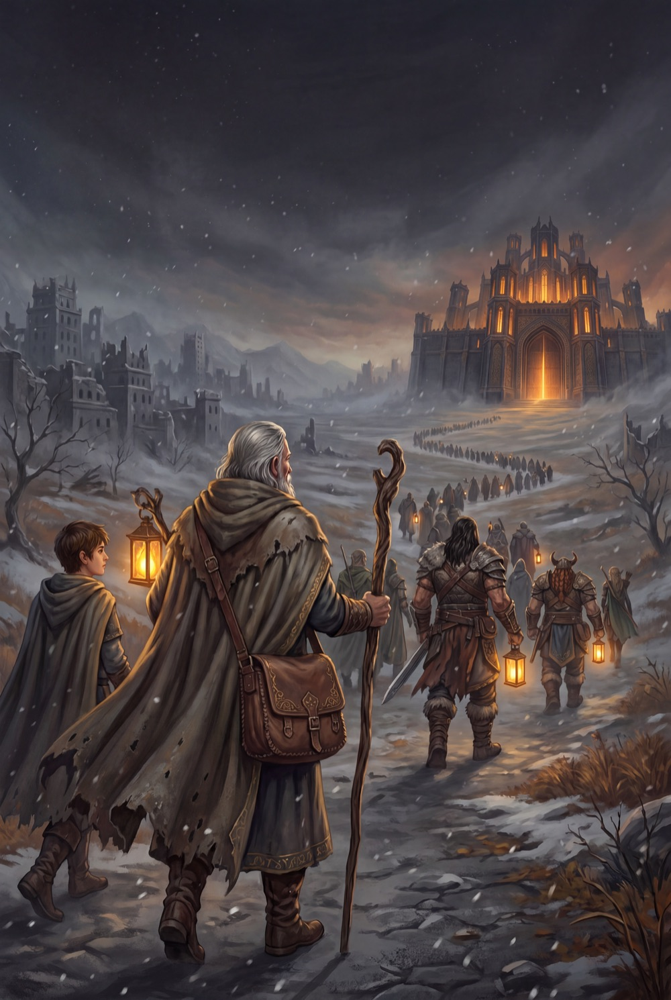

Primera parte · DPG1

El Camino de la Ceniza
Fernando Martí · Norberto Cuartero
Seis ciudades caen en un año, y cada una enseña — sin decirlo — una parte del oficio: la ciudad que no quiso leerse a sí misma, la herrera que fundió su obra antes que entregarla, la ciudad de las cien fiestas, el tribunal vacío, los espejos rotos de Claraguas. Al final del camino no hay victoria: hay una columna de refugiados, una puerta encendida bajo la lluvia y un alistamiento.
«No salvamos ninguna ciudad. Salvamos algo mejor. A la gente.»